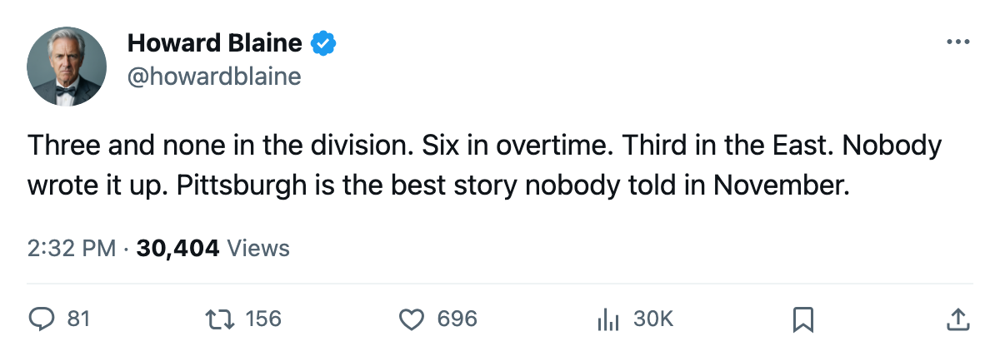
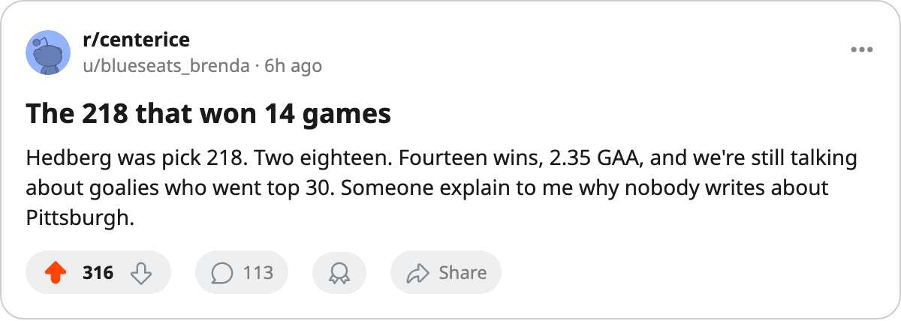

Three and None in the Division: Pittsburgh Has Won Every Atlantic Game After Regulation, and the League's Second-Cheapest Payroll Has No One Writing About It
The Penguins are 3-0-0 in overtime within their own division, sit third in the East at 30 points on $48.92M, and have not lost a game against an Atlantic opponent
 Howard BlaineSenior writer, The Blaine Rankings · The Hockey Gazette
Howard BlaineSenior writer, The Blaine Rankings · The Hockey Gazette
 Pittsburgh Penguins has played 3 games inside the Atlantic division this season. They have won all 3. All 3 went past three periods. No other club in that division holds a record without a loss.
Pittsburgh Penguins has played 3 games inside the Atlantic division this season. They have won all 3. All 3 went past three periods. No other club in that division holds a record without a loss.
The Penguins sit third in the Eastern Conference at 30 points, one behind  New Jersey Devils and
New Jersey Devils and  Boston Bruins and two ahead of
Boston Bruins and two ahead of  New York Islanders. They have done this on a $48.92M payroll, the 5th-lowest in the league, which returns $1.63M per point, second only to
New York Islanders. They have done this on a $48.92M payroll, the 5th-lowest in the league, which returns $1.63M per point, second only to  Dallas Stars at $1.61M. Nobody at this desk has written a word about them.
Dallas Stars at $1.61M. Nobody at this desk has written a word about them.
 Johan Hedberg86 has started 20 games and won 14, carrying a 2.35 GAA and a 0.882 save percentage. The Bureau has him at 89 overall. He was the 218th pick of the 1994 draft, selected in the 8th round, and he is outworking goaltenders drafted 200 places ahead of him. Pittsburgh's home record sits at 8 and 3, and Hedberg has not given up fewer than 2 goals in any of his last 4 decisions.
Johan Hedberg86 has started 20 games and won 14, carrying a 2.35 GAA and a 0.882 save percentage. The Bureau has him at 89 overall. He was the 218th pick of the 1994 draft, selected in the 8th round, and he is outworking goaltenders drafted 200 places ahead of him. Pittsburgh's home record sits at 8 and 3, and Hedberg has not given up fewer than 2 goals in any of his last 4 decisions.
 Mario Lemieux85 turns 41 in 5 days. He is 40 years old, carrying 27 points in 21 games, a pace of 105 points over 82. His Book grade is 88 today, four below his base of 92, and the Development Index has him slipping. His attributes are the reason a man his age is still playing this well: 96 passing, 95 deking, 93 in the faceoff circle, 92 puck handling. His fight grade sits at 50, his toughness at 58. He no longer tries to win physically, and he wins on his hands and his read instead, at a pace most 25-year-olds cannot match.
Mario Lemieux85 turns 41 in 5 days. He is 40 years old, carrying 27 points in 21 games, a pace of 105 points over 82. His Book grade is 88 today, four below his base of 92, and the Development Index has him slipping. His attributes are the reason a man his age is still playing this well: 96 passing, 95 deking, 93 in the faceoff circle, 92 puck handling. His fight grade sits at 50, his toughness at 58. He no longer tries to win physically, and he wins on his hands and his read instead, at a pace most 25-year-olds cannot match.
 Martin Straka83 carries 28 points in 21 games, a 109-point pace. He is 33 and the second-best scorer on a roster whose top four forwards in the Book are a 40-year-old, a 33-year-old, an 8th-round goaltender, and nobody else above 80.
Martin Straka83 carries 28 points in 21 games, a 109-point pace. He is 33 and the second-best scorer on a roster whose top four forwards in the Book are a 40-year-old, a 33-year-old, an 8th-round goaltender, and nobody else above 80.
The overtime identity
Six overtime wins this season, tied with  Carolina Hurricanes for the league lead, is what defines Pittsburgh right now, ahead of the goal differential or the power play. Within the Atlantic division, they are 3 wins and 0 losses, and every single one came after the third period. The Penguins have never won a regulation game against an Atlantic opponent this season, and they have never lost one.
Carolina Hurricanes for the league lead, is what defines Pittsburgh right now, ahead of the goal differential or the power play. Within the Atlantic division, they are 3 wins and 0 losses, and every single one came after the third period. The Penguins have never won a regulation game against an Atlantic opponent this season, and they have never lost one.
| Club | Div GP | Div W | Div OTW | Div L | Div OTL |
|---|---|---|---|---|---|
| PIT | 3 | 0 | 3 | 0 | 0 |
| NYR | 3 | 2 | 0 | 0 | 1 |
| NJ | 2 | 1 | 0 | 1 | 0 |
| NYI | 4 | 1 | 0 | 2 | 1 |
| PHI | 4 | 1 | 0 | 2 | 1 |
Tonight Boston Bruins arrives at the Mellon Arena for the first meeting between these clubs. Boston sits at 29 points in 21 games, one behind Pittsburgh. The Penguins have not beaten a regulation-time opponent inside their own division all season, but they have not lost one either, and the overtime record suggests this game does not end in 60 minutes.
What the ledger says
The business side is healthy. PIT turns $40.43M in revenue against $48.92M in payroll and books a profit of $20.30M, with 15,799 fans per night and an $81 ticket. They are 25th in payroll spending and third in the conference. That combination, $1.63M per point and a third-place standing, is the best efficiency-to-record ratio in the Eastern Conference. New Jersey Devils sits behind them at $2.01M per point. Boston Bruins pays $2.08M.  New York Rangers, first in the East, pays $2.45M.
New York Rangers, first in the East, pays $2.45M.
The question for December is whether the overtime habit holds. Six games past three periods in 21 is a coin-flip rate that will eventually normalize. Hedberg's 89 overall will carry them through bad nights, and Lemieux's passing and deking do not expire on a birthday. But a club that cannot close out a divisional opponent in regulation is a club that gets fewer rest days in March, when the games that matter come on back-to-backs.
For now, at 8 and 5 and 2 with 6 overtime wins and 30 points, nobody is writing about Pittsburgh. Boston should change that.

